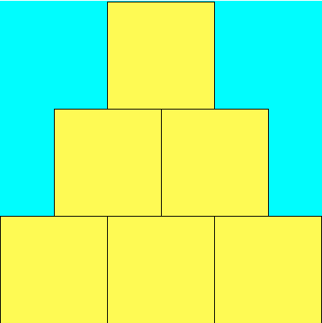
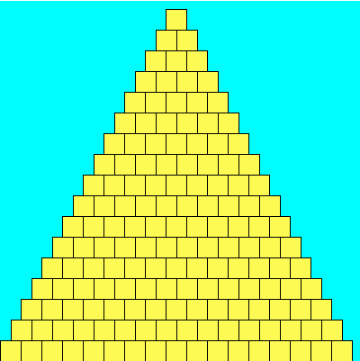
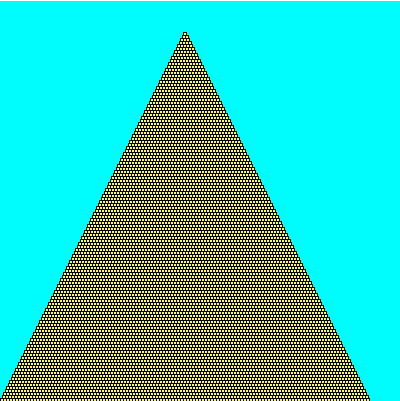
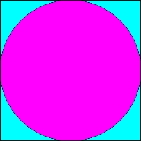

CSCI 150: PreLab 3
Visualizations
Due:
9AM
on
Wednesday,
September 18th
In this prelab you will formulate some of the ideas necessary to complete Lab 03. Please turn in your solution on Gradescope. You can either turn it in as a PDF (e.g., saving a document as a PDF in Word), take a picture (e.g., with a smartphone), or scan it (e.g., at the library) to hand it in. Please remember, no late prelabs allowed!
Reading
Read about one of the first Computer Scientists, Ada Lovelace, who predated computers by a century.
Picture This
In the lab proper, you'll be using graphical primitives (rectangles, circles, lines, etc.) to create an image of your own choosing.
Walk Like an Egyptian
Describe the Problem |
In lab you'll be creating a program that draws a pyramid of bricks based on user input.
Input: An integer for the width of the image (width) and the height in bricks of the pyramid (n). Output: An image of a pyramid that is n bricks tall in a square canvas width wide (and thus width tall). |
Understand the Problem |
Here are three sample outputs for your reference. Notice that the pyramid doesn't necessarily fill the entire canvas to the right and to the top; if the canvas width is not evenly divisible by the number of bricks, then there will be extra blank space. (A question for you to ponder: why is there so much blank space in the third example? Seems like you could fit lots of extra bricks both to the right and up top...)
400 x 400, 3 bricks.  400 x 400, 17 bricks.  400 x 400, 123 bricks.  |
- Draw the canvas and the pyramid to a reasonable scale and with enough precision so that we can see the coordinates and any gaps that might remain between the top (or right side) of the pyramid and the edge of the canvas.
- What is the side-length of each brick (how wide and tall is each brick)?
- How many bricks are in the 0th (bottom) row?
- How many bricks are in the 1st (middle) row?
- How many bricks are in the 2nd (top) row?
- Let the upper-left corner of the canvas be (0,0) with the x and y values increasing as you move right and down, respectively. What are the x- and y-coordinates of the upper left corner of the first brick in the 0th row?
- What are the x- and y-coordinates of the upper left corner of the first brick in the 1st row?
5. If our pyramid is n bricks tall, then it is also n bricks wide at its base. Thus we have that
- Row 0 contains n bricks
- Row 1 (just above row 0) has n-1 bricks
- Row n-1 (the top row) has 1 brick.
6. If our pyramid is n bricks tall and each brick has side-length s, then
- The first brick of row 0 starts at x-coordinate 0.
- The first brick of row 1 starts at x-coordinate s//2.
7. If your pyramid is n bricks tall, our canvas width wide and tall, and each brick has side-length s, then
- The bricks of row 0 have y-coordinate width-s.
- The bricks of row 1 have y-coordinate width-2s.
Monte Carlo!
You probably remember bumping into that peculiar number π = 3.14159265..., right? It comes up when you're talking about circles and trigonometry, but also appears in a bunch unexpected places that seem to have little to do with either. As a refresher, Pi can be defined as the ratio of a circle's circumference (π d) to its diameter (d). One interesting feature of Pi is that it's an irrational number, meaning it cannot be expressed as a fraction m/n where both m and n are integers; consequently, its decimal representation never ends or even repeats. In fact, we can make a stronger statement about Pi: it is a transcendental number, which means that there is no polynomial with rational coefficients of which Pi is a root. But, I digress.
Since ancient times, mathematicians have been fascinated with the study of Pi and it's properties. Early approximations of Pi, such as 22/7 and 355/113 were accurate to 3 and 7 digits repsectively (the latter approximation was the best known for nearly a millenium). Currently, more than the first trillion (a million million) digits are known. There are many ways to estimate Pi -- for example, you could draw as precise a circle as you can manage, measure its circumference C and diameter d, and then divide C/d; this should give you Pi. Alternatively, there is a geometry-based approach due to Archimedes. We'll investigate a third approach using what is called a Monte Carlo method.
Monte Carlo Method
When we say we're using a Monte Carlo method, we usually mean we're going to do a bunch of random trials and observe the fraction of those trials that have a certain property. In our case, we're going to be throwing darts into a square region, and computing the fraction of those darts that land within a circle inscribed inside that square. Each throw is a trial, and the property we are concerned with is whether or not the dart landed inside the circle or not.
| Describe the Problem: | The problem you will solve on your lab is as follows. Input: get a number of trials n from the user. Goal: compute and output an approximation to Pi using a Monte Carlo method with n trials. |
| Understand the Problem: | More precisely, we'll begin by (theoretically) constructing a target circle inscribed in a square. This is our dart board, and the target circle reaches all the way to the edge of the square. It might look something like the following:  Next, we'll simulate repeatedly throwing darts at random against the board above (we'll assume that our random throws always hit the square, and are equally likely to land at any given point inside the square). We then look at the fraction of the darts that land within the circle out of all those that were thrown. I claim that if we then multiply this fraction by 4, we should have a good approximation to Pi. What sort of dark sorcery is this? Let's take a closer look.Suppose you are throwing darts at the square board. Assuming it lands on the board, the chance that any one dart is inside the circle is the ratio of the area of the circle to the area of the square. So, if the circle had area 90 and the square area 100 (not possible, but humor me), you'd have a 90% chance of hitting the circle. |
- What is the length of one side of the square board in terms of r?
- What is the area of the square board in terms of r?
- What is the area of the inscribed circle in terms of r?
- Use these to determine the probability that a randomly thrown dart lands within the circle. That is, determine the ratio R of the two areas (the circle's area divided by that of the square). Simplify your expression for R (it will have a Pi in it). Then give an expression for Pi in terms of R using (simple) algebraic manipulation.
What is the (x = centerX, y = centerY) coordinate of the center of the circle in terms of radius r?
Honor Code
If you followed the Honor Code in this assignment, write the following sentence attesting to the fact at the top of your homework.
I affirm that I have adhered to the Honor Code in this assignment.